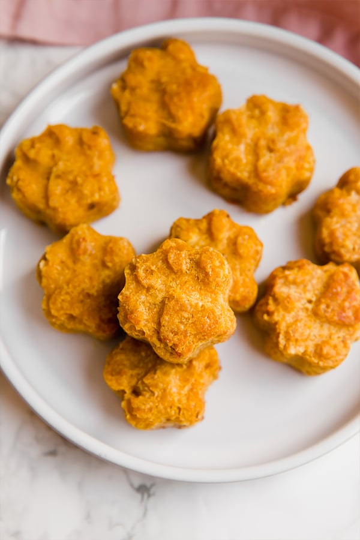

Meals and Treats
Tasty Treats for animals big and small
Dog and Cat Food
Science Diet for Adult, Medium, Small, Puppy Kibble
Crafted with beet pulp, which is a nourishing prebiotic fiber. Highly digestible to help support optimal nutrient absorption. Contains vitamin E and omega-6 fatty acids to support healthy skin and a lustrous coat. Crafted with natural ingredients, plus added vitamins, minerals and amino acids. Recommended by veterinarians
Buddy Biscuits Oven-Baked with Peanut Butter Dog Treats
All-natural treats made with delicious peanut butter and baked in fun ginger-kid shapes. Simple, clean and wholesome ingredients you can feel good about serving your best friend. Great for all dogs, even those with food allergies or sensitive tummies. Free of corn, yeast, sugar, salt, soy, artificial colors, flavors or preservatives. Oven-baked biscuits made in the USA without fillers and additives.
Nulo Digestive Health Crunchy Cat Treats
Made in the USA with chicken as the first ingredient, just 2 calories per treat to help support healthy weight. Grain-free treats contain high-quality protein and are easy to digest. Natural fibers from tasty fruits and miscanthus grass support normal digestive function. Prebiotics and probiotics support your cat’s overall gut health. Free of corn, wheat, gluten, soy and artificial preservatives, colors or flavoring.